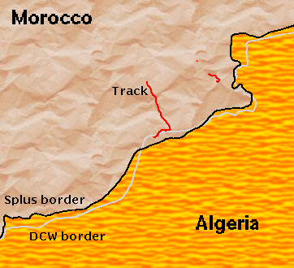

No biggie, just tell it we're in Morocco, check the map datum, set metric coordinates, and restore the route from the one saved on my Pilot. Phew. We're off again. A few waypoints later, we're drinking coke and mint tea in a cafe in a desert town thats not even on the map.
So when I get home I download the track data and plot it on the Digital Chart of the World basemap. And we're in Algeria. Only for a bit though. That bit being the point where the GPS failed.
Some mistake surely. A map projection/datum/spheroid problem? I plot the track on a basemap generated from the world map data supplied with S-plus, and we're safely in Morocco again.
The two sets of base map data differ wildly on the Algerian border. Along the coast of Morocco they agree almost precisely, but just where you need it most, they disagree. The following image shows the two borders (Splus in black, DCW in gray) and the track according to the GPS (red).
